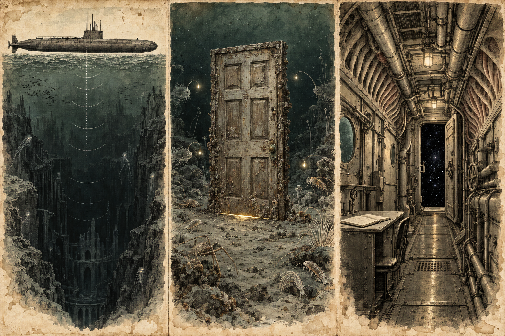

ADJUSTING TO THE DARK
W A S D to move. E / Q to rise or sink. Drag or use arrow keys to look. Shift to move faster. Scroll or pinch the view to zoom. Reset restores your bearings and zoom.
Left stick to swim. Right stick to look. Look down and swim forward to descend; look up to ascend.
Sink to reach the floor. Rise to return. Chart skips the journey.
An imagined Mariana Trench. The creatures borrow from marine biology; their forms and this journey are fiction. Depths are illustrative.
